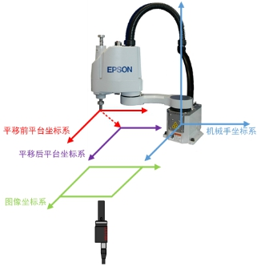
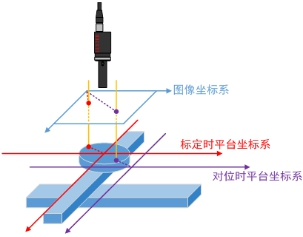
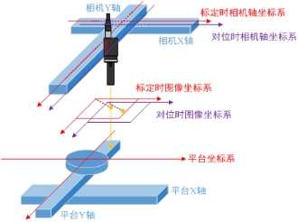

轴到平台的标定结果：依据轴到平台的标定结果，直接将轴位置变化量转化为平台距离变化量。

如图1，当对位时轴位置不等于标定时轴位置时，图像坐标系与平台坐标系间的位置关系变化，称之为平台坐标系原点更新。当平台坐标系原点更新时，直接由图像坐标和标定结果计算得到平台坐标并不正确。需要根据轴位置的变化量对转换关系进行修正，得到正确的图像坐标系和平台坐标系间的转换关系，以得到正确的平台坐标。通用平台坐标修正工具就是对输入平台坐标依据轴位置的变化加以修正，计算修正后平台坐标的工具。

| 分类 | 参数名称 | 参数描述 |
|---|---|---|
| 属性窗口 | 坐标修正类型 | 图像到平台和图像到轴的标定结果：依据图像到轴的标定结果，先将轴位置变化量转化为图像距离；后依据图像到平台的标定结果，将图像距离转化为平台距离。 轴到平台的标定结果：依据轴到平台的标定结果，直接将轴位置变化量转化为平台距离变化量。 |
| X/Y轴属性 | 选择X/Y轴是平台轴还是相机轴：若X/Y为相机轴，则最终结果为输入平台坐标+X/Y平台距离变化量；若X/Y为平台轴，则最终结果为输入平台坐标-X/Y平台距离变化量。 |
|
| 图像窗口 | 无 | 无 |
| 数据链 | 平台坐标 | 待修正的平台坐标输入。 |
| 标定时轴位置 | 标定时的轴位置，该轴可能为相机轴，也可能为平台轴。 | |
| 对位时轴位置 | 对位时的轴位置，该轴可能为相机轴，也可能为平台轴。 | |
| 轴方向 | 平台/相机各轴的正方向。 | |
| 图像到平台的标定结果 | 图像到平台的标定结果，只在坐标修正类型为“图像到平台和图像到轴的标定结果”时使用。 | |
| 图像到轴的标定结果 | 图像到轴的标定结果，只在坐标修正类型为“图像到平台和图像到轴的标定结果”时使用。 | |
| 轴到平台的标定结果 | 轴到平台的标定结果，只在坐标修正类型为“轴到平台的标定结果”时使用。 | |
| 高级界面 | 无 | 无 |
| 分类 | 参数名称 | 参数描述 |
|---|---|---|
| 监视窗口 | 修正平台坐标 | 修正后的平台坐标结果。 |
| 执行结果 | 工具执行结果。 | |
| 执行时间 | 工具执行时间。 | |
| 图像窗口 | 无 | 无 |
| 数据链 | 修正平台坐标 | 修正后的平台坐标结果，供后序工具使用，同监视窗口参数。 |
X/Y轴属性为相机轴或平台轴时，则标定和对位时的轴位置变化量将会影响到平台坐标的变化，此时则需要用到平台坐标修正工具对当前计算的平台坐标进行修正，以将轴位置的变化量考虑进去，从而得出正确的平台坐标结果。当轴属性不同时，修正工具的计算方式也不同：
当X/Y轴属性为平台轴时，此时结构示意图如图2。平台轴位置的变化引起了对位和标定时的平台坐标系发生了变化，此时的平台坐标需要减去X/Y轴位置的变化量予以修正。

当X/Y轴属性为相机轴时，此时结构示意图如图3。相机轴位置的变化引起了对位和标定时的图像坐标系发生了变化，此时的平台坐标需要与X/Y轴位置的变化量相加予以修正。

参见“\Samples\标准标定+基准四点两线对位.gvp”